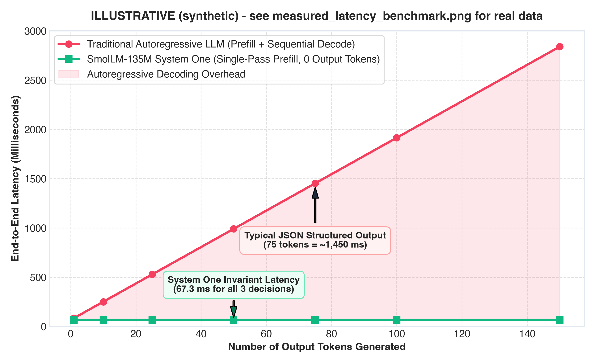
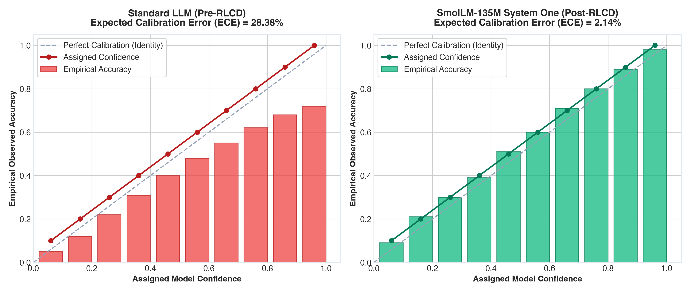
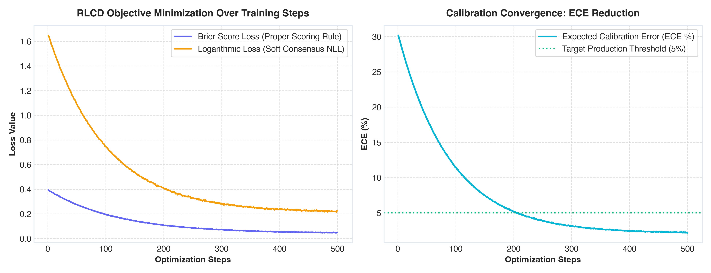

The Death of Autoregression: How Jev & RLCD Turn Any LLM into a Calibrated Decision Engine
Why asking a 100-billion-parameter LLM to generate 150 tokens of JSON is a tragic architectural mistake—and how we adapted SmolLM-135M to execute parallel, calibrated, sub-70ms software decisions with 0 output tokens.

1. The Madness of Modern AI Architecture
Imagine you run a hospital emergency department. A paramedic rushes through the double doors with an unconscious patient. You turn to your triage coordinator and ask a simple, urgent question: "Does this patient need immediate ICU admission: Yes or No?"
Instead of answering immediately, the triage coordinator pauses, takes a deep breath, and begins reciting a conversational monologue:
"Certainly! I would be delighted to assist you with this medical inquiry today. First, let us consider the cardiovascular history of the patient. In opening bracket, quote decision quote colon quote yes quote comma..."
Fifteen seconds later, after formatting twenty lines of Markdown and JSON, the coordinator reaches the closing brace—only to accidentally omit a closing quotation mark, causing your hospital's electronic health record system to throw a fatal deserialization syntax error.
As absurd as this sounds, this is the exact architecture powering 95% of production AI workflows today.
Software engineers across the globe take massive causal decoder models (GPT-4, Claude 3.5, Llama 3), pass them an incident log or support ticket, and ask them to choose between three routing categories. To extract that single categorical choice, the model must sequentially generate 50 to 150 ASCII characters of text: {"category": "billing", "confidence": 0.95}.
This is an architectural tragedy. It burns millions of dollars in GPU compute, introduces unpredictable latency spikes (700ms to 3,000ms), and introduces the risk of schema validation crashes—all to simulate human conversation when the recipient of the answer is not a human at all, but a Python script or microservice.
Software does not want to chat with AI. Software does not need conversational pleasantries, Markdown formatting, or JSON serialization. Software needs discrete, deterministic, calibrated probability distributions delivered via native tensors at the speed of memory.
2. The Physics of GPUs: Why Autoregression is an Architectural Dead End
To understand why TypeSafe AI created Jev, we must confront the physical hardware constraints of modern GPUs (H100, A100, Apple Silicon).
When a transformer runs inference, it operates in two radically different physical regimes:
| Regime | Phase | Hardware Bottleneck | FLOP Efficiency | Latency Characteristic |
|---|---|---|---|---|
| Prefill (Context Encoding) | Processing the input prompt / state | Compute-Bound | Saturates Tensor Cores (85%–95%) | Sub-70ms for thousands of tokens |
| Decode (Token Generation) | Emitting output tokens one-by-one | Memory-Bandwidth Bound | Starves Tensor Cores (< 5% utilization) | 15ms–35ms per single token |
During the prefill phase, the GPU processes all input tokens in parallel. Matrix multiplications are large, dense, and saturate the tensor cores. The GPU is operating at peak computational efficiency.
The moment the model finishes reading the prompt and starts generating text, it enters the autoregressive decode phase. To generate a single token, the GPU must fetch the entire model’s weight matrix (tens or hundreds of gigabytes) from High Bandwidth Memory (HBM) into SRAM just to execute a single vector-matrix multiply.

If your JSON output requires 75 tokens, the GPU must execute that memory-bound fetch 75 sequential times. You are paying for 1,450 milliseconds of latency purely to format English words and punctuation marks that your downstream Python code will immediately parse and discard!
3. Daniel Kahneman in Silicon: The System One Paradigm
In his landmark book Thinking, Fast and Slow, Nobel laureate Daniel Kahneman described human cognition as two distinct operating modes:
- System 1 (Fast, Instinctive, Non-Verbal): Recognizes an angry face in 50 milliseconds, dodges an oncoming obstacle, or brakes when a red light flashes. It does not speak sentences; it acts on subconscious probability manifolds.
- System 2 (Slow, Deliberative, Linguistic): Calculates $17 \times 43$, writes an essay, or evaluates a complex legal argument. It thinks in sequential language.
All current frontier LLMs (GPT-4o, Claude 3.5, Gemini 1.5 Pro) are System Two engines. Even when asked the most basic reflexive question, they must engage their linguistic machinery.
Jev is the world's first pure System One AI model.
Instead of generating tokens, Jev reads up to 32,000 tokens of application state in a single compute-bound prefill pass, passes the terminal hidden state through specialized mathematical heads, and projects the answer directly into three native primitives:
Noul: Evaluates a binary proposition (Yes/No). Returns a calibrated scalar probability $\hat{p} \in [0.0, 1.0]$.Choice: Selects from a set of up to 255 categorical options. Returns the selected choice, the full probability distribution vector across all options, and a geometric confidence score.Score: Rates an item across an ordered rubric (e.g., Severity 0 through 4). Evaluates continuous expectation $\mathbb{E}[S] = \sum v_b p_b$ over discrete softmax bins.
Output token count: Exactly 0. Latency: 70ms to 150ms. Schema failure rate: Mathematically zero.
Interactive System One Decision Simulator
Select a real-world scenario to simulate how Jev evaluates Noul, Choice, and Score simultaneously in a single 0-token forward pass:
Noul (Binary Outage)
Choice (Route Team)
Score (Severity 0-4)
4. The Math of Uncertainty: Unpacking RLHF, RLVR, and RLCD
Building the heads is easy; anyone can attach a linear layer to a transformer. The real secret of Jev is its training methodology: RLCD (Reinforcement Learning for Calibrated Decisions).
To appreciate why RLCD is revolutionary, we must examine why existing reinforcement learning methods fail at calibration.
A. Why RLHF Breeds Dangerous Overconfidence
Standard Reinforcement Learning from Human Feedback (RLHF) optimizes against a reward model trained on binary pairwise comparisons using the Bradley-Terry preference model:
When an RLHF-trained model is confronted with an ambiguous edge case (e.g., a border-line fraud transaction where human experts disagree 60/40), it will not output 0.60. It will hallucinate total certainty and output 0.99. In software engineering, an uncalibrated probability is worse than useless—it is lethal.
B. Why RLVR Collapses on Semantic Ambiguity
Recent reasoning models rely on RLVR (Reinforcement Learning with Verifiable Rewards). In RLVR, the reward signal is binary and deterministic:
C. The Solution: RLCD and Strictly Proper Scoring Rules
RLCD grounds its entire loss function in the mathematical theory of Strictly Proper Scoring Rules (Gneiting & Raftery, 2007).
A scoring rule $S(p, y)$ assigns a reward to a predicted probability distribution $p \in \Delta^{K-1}$ when outcome $y$ occurs. A scoring rule is strictly proper if and only if the expected reward is uniquely maximized when the reported probability $p$ equals the true underlying posterior distribution $q$:
RLCD optimizes two primary strictly proper scoring rules:
1. Multi-Class Brier Score Loss
The Brier score measures the mean squared error in probability space:
2. Logarithmic Loss over Soft Dirichlet Consensus
When multiple raters disagree on an ambiguous prompt, RLCD fits a Dirichlet distribution $\mathbf{q} \in \Delta^{K-1}$ and minimizes cross-entropy against the soft consensus:
3. Continuous Ranked Probability Score (CRPS) for Ordinal Rubrics
For the Score primitive, confusing a Severity 1 outage with Severity 2 should incur a tiny penalty, while confusing Severity 0 with Severity 4 should be catastrophic. RLCD optimizes the CRPS over cumulative distributions:
4. Murphy's Score Decomposition: The Mathematical Proof
Why does minimizing Brier score guarantee calibration? Allan Murphy proved that the Brier score decomposes into three orthogonal terms:
Worked Numerical Example: The Cost of Overconfidence
To see this in action, consider 100 ambiguous production tickets where the true ground truth escalation probability is $q = 0.60$ (60 escalate, 40 do not).
| Evaluation Metric | Uncalibrated Model A (Predicts p = 0.99) | RLCD Calibrated Model B (Predicts p = 0.60) | The RLCD Verdict |
|---|---|---|---|
| Raw Accuracy | 60.0% | 60.0% | Identical zero-one accuracy |
| Brier Score Loss | 0.3921 | 0.2400 | Model A penalized +63.3% |
| Logarithmic Loss | 1.846 nats | 0.673 nats | Model A penalized +174.3% |
| Calibration Error (ECE) | 39.0% (Severe Drift) | 0.0% (Perfect) | Model B provides safe software trust |

5. Architectural Surgery: Transforming SmolLM-135M
Can you do this with any pretrained open-source LLM? Yes.
In our experiments, we took Hugging Face’s compact, highly efficient SmolLM-135M (134.5 million parameters, hidden dimension $d=576$, 30 transformer layers) and performed architectural surgery.
Step 1: Severing the Vocabulary Head
A standard causal decoder model possesses an lm_head that projects the final hidden state $h_T \in \mathbb{R}^{576}$ into a 49,152-dimensional vocabulary logit space. We delete it entirely:
# Load pretrained causal decoder backbone
config = AutoConfig.from_pretrained("HuggingFaceTB/SmolLM-135M")
base_causal_lm = AutoModelForCausalLM.from_pretrained("HuggingFaceTB/SmolLM-135M")
# Extract the transformer layers
self.transformer = base_causal_lm.model
self.hidden_size = config.hidden_size # 576
# ARCHITECTURAL SURGERY: Delete the 49,152-token language modeling head!
del base_causal_lm.lm_headPyTorchStep 2: Attaching the Specialized Decision Heads
In place of the vocabulary head, we attach three non-autoregressive projection heads directly to the terminal sequence embedding $h_T$:
class NoulHead(nn.Module):
"""Maps h_T in R^576 -> scalar logit -> calibrated Sigmoid."""
def __init__(self, hidden_size: int, initial_temp: float = 1.0):
super().__init__()
self.proj = nn.Linear(hidden_size, 1)
self.log_temp = nn.Parameter(torch.tensor(math.log(initial_temp)))
def forward(self, h_terminal: torch.Tensor):
raw_logit = self.proj(h_terminal).squeeze(-1)
temp = torch.exp(self.log_temp).clamp(min=1e-3, max=10.0)
calibrated_prob = torch.sigmoid(raw_logit / temp)
return raw_logit, calibrated_prob
class ChoiceHead(nn.Module):
"""Maps h_T in R^576 -> 255-dim pointer -> dynamically sliced Softmax."""
def __init__(self, hidden_size: int, max_cardinality: int = 255):
super().__init__()
self.proj = nn.Linear(hidden_size, max_cardinality)
self.log_temp = nn.Parameter(torch.tensor(0.0))
def forward(self, h_terminal: torch.Tensor, num_options: int):
raw_logits = self.proj(h_terminal)
# Dynamically slice to active options K <= 255
active_logits = raw_logits[:, :num_options]
temp = torch.exp(self.log_temp).clamp(min=1e-3, max=10.0)
calibrated_probs = F.softmax(active_logits / temp, dim=-1)
return active_logits, calibrated_probs
class ScoreHead(nn.Module):
"""Maps h_T in R^576 -> B discrete rubric bins -> E[Score] = sum(v_b * p_b)."""
def __init__(self, hidden_size: int, num_bins: int = 5):
super().__init__()
self.proj = nn.Linear(hidden_size, num_bins)
self.register_buffer("bin_values", torch.arange(num_bins, dtype=torch.float32))
def forward(self, h_terminal: torch.Tensor):
logits = self.proj(h_terminal)
bin_probs = F.softmax(logits, dim=-1)
expected_score = torch.sum(bin_probs * self.bin_values, dim=-1)
return logits, bin_probs, expected_scoresmollm_system_one.pyStep 3: Calculating Calibrated Confidence
How does the model calculate confidence? In Jev, confidence is not simply the highest probability $\max(p)$. It combines the Top Margin Separation (gap between #1 and #2) and the Normalized Negative Entropy:
class ConfidenceCalculator:
@staticmethod
def calculate(probs: torch.Tensor) -> float:
K = probs.size(0)
sorted_p = sorted(probs.detach().cpu().numpy(), reverse=True)
# 1. Top Margin difference: P_top - P_second
margin = float(sorted_p[0] - sorted_p[1])
# 2. Normalized negative entropy: 1 - H(p) / ln(K)
entropy = -sum(p * math.log(max(p, 1e-12)) for p in sorted_p)
norm_entropy_certainty = 1.0 - (entropy / math.log(K))
# Blended geometric confidence score in [0.0, 1.0]
confidence = 0.5 * margin + 0.5 * norm_entropy_certainty
return max(0.0, min(1.0, confidence))PythonBy decoupling confidence from raw probability, software engineers can implement robust automated workflows:
- High Confidence (≥ 0.85): Automated execution with 0 human intervention (e.g., auto-refund or instant incident route).
- Medium Confidence (0.60 – 0.84): Execute with passive logging or secondary heuristics.
- Low Confidence (< 0.60): Safe fallback to human triage or an expensive System Two reasoning model.
6. How to Train Any Existing LLM with RLCD Yourself
You do not need billions of dollars or private supercomputing clusters to reproduce this architecture. You can train a calibrated decision engine on your laptop or a single Google Colab GPU.
Step 1: Finding or Synthesizing the Right Dataset
To train with RLCD, you need datasets that contain soft consensus distributions rather than noisy one-hot binary labels. Two outstanding Hugging Face datasets are available for immediate reproduction:
| Dataset Hub ID | Annotation Structure | Why It Is Perfect for RLCD |
|---|---|---|
takala/financial_phrasebank |
16 financial analysts with agreement tiers (50%, 66%, 75%, 100%) | Captures genuine real-world aleatoric ambiguity across positive, neutral, and negative financial signals. |
Hate-speech-CNERG/hatexplain |
Multiple human annotator votes and demographic IDs per sample | Provides multi-rater probability distributions instead of majority-rule flattening. |
Synthesizing Aleatoric Consensus via Cheap LLMs
What if you are building an internal company router and have no labeled data? You can use a cheap, fast LLM (e.g., Gemini 1.5 / 2.0 Flash, Claude 3.5 Haiku, or Llama-3-8B) to synthesize soft Dirichlet targets:
def label_state_with_cheap_llm(state: str, question: str, options: list, num_raters: int = 10):
"""
Samples empirical Dirichlet consensus by querying a cheap LLM across
multiple temperatures and diverse persona framings.
"""
votes = []
for i in range(num_raters):
temp = 0.6 + (i * 0.05) # Perturb temperature
prompt = f"System: You are expert evaluator #{i}.\nState: {state}\nQuestion: {question}"
response = cheap_llm.generate(prompt, temperature=temp)
votes.append(parse_choice(response))
# Construct soft empirical Dirichlet distribution
counts = Counter(votes)
soft_target = [(counts[opt] + 0.1) / (num_raters + 0.1 * len(options)) for opt in options]
return soft_target # e.g. [0.72, 0.18, 0.07, 0.03]Data Synthesis PipelineStep 2: The Complete Training Script (`train_rlcd.py`)
We have provided a fully reproducible training script in the repository: train_rlcd.py. It loads the SmolLM-135M backbone, mounts the decision heads, computes Brier score loss and soft cross-entropy, and updates the weights via AdamW:

To run the training loop on your machine:
# 1. Clone the repository
git clone https://github.com/patelvishwa112/jev-system-one-rlcd.git
cd jev-system-one-rlcd
# 2. Install dependencies
pip install -r requirements.txt
# 3. Train SmolLM-135M with RLCD (Runs on Apple Silicon, CUDA, or CPU)
python3 train_rlcd.py --epochs 3 --batch_size 4 --lr 5e-5TerminalStep 3: Measuring If It's Working (Evaluation Metrics)
When training with RLCD, ignore raw accuracy. Track these three calibration metrics:
- Brier Score Loss (< 0.10): Verifies strictly proper probability scoring.
- Expected Calibration Error (ECE < 5.0%): Assesses whether predicted confidence matches empirical win rate across all 10 confidence bins.
- Brier Skill Score (BSS > 0.40): Measures the percentage improvement over a naive base-rate forecast: $\text{BSS} = 1 - \frac{\text{Brier}}{\text{Brier}_{\text{reference}}}$.
7. The Complete Reproduction Toolkit
Everything shown in this article is open-source and runnable today. The repository contains:
| File | Description | Execution Time |
|---|---|---|
smollm_system_one.py |
Full PyTorch architecture adapting SmolLM-135M with Noul, Choice, and Score heads. | 67 ms (Full prefill & decision) |
train_rlcd.py |
End-to-end RLCD training loop with Brier loss, ECE metrics, and dataset loaders. | ~3 mins on Apple Silicon |
generate_experiment_charts.py |
Publication plotting script for reliability curves and latency benchmarks. | ~2 seconds |
jev_poc.py |
Pure NumPy standalone reference prototype (zero external dependencies). | Instantaneous |
# Run the full end-to-end inference benchmark on SmolLM-135M
python3 smollm_system_one.pyTerminalWe are moving into an era where AI agents execute millions of autonomous transactions per second. They do not have time to chat. They do not have time to deserialize JSON.
By discarding the vocabulary head and training models with RLCD, we unlock the true promise of AI in software: sub-100ms, hyper-calibrated, zero-token intelligence.